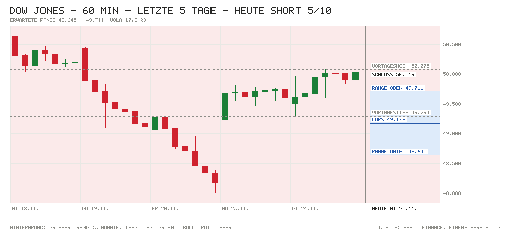

Tagesentscheidung ab 15:33 bis 22:00 Uhr
Der Dow eröffnet mit einer Lücke von −1,1 % und rutscht danach weiter auf 49.178. Bisher war die Eröffnung das Tageshoch. Heiße US-Daten (BIP 4,3 % statt 3,4 %, Kern-PCE 3,3 % statt 3,2 %) festigen die Fed-Erhöhung im Dezember. Dazu kommen Nvidia mit −8 % und neue Zollsorgen. Alle zwölf Dow-Werte in den Daten liegen im Minus, Europa und Asien sind schwach und der große Trend steht auf Bear. Das wichtigste Gegenargument: Nach −1,7 % ist schon viel verkauft. Viele Hebel-Fonds sind short und können wie gestern eine Gegenbewegung auslösen (+625 Punkte nach unserer Short-Einschätzung). Auch die fallenden Renditen stützen. Darum nur mittlere Überzeugung (eigene Einschätzung).
- Kurs um 15:33
- 49.178
- Erwartete Range
- 48.645 – 49.711
- Eingepreist (Tagesoption)
- ±1,09 %
Einschätzung vom Kurs um 15:33 bis zum US-Schluss. Range = ±1 σ für die restliche Handelszeit aus der S&P-500-Tagesoption, auf den Dow umgerechnet (ca. 68 %). Keine Anlageberatung.
Chart

Signale
| Signal | Wirkung | Stand und Einordnung |
|---|---|---|
| Eröffnung & erste Minuten | Rückenwind | Eröffnung 49.470 (Lücke −1,10 %), jetzt 49.178 (−0,59 % seit Eröffnung), Hoch/Tief bisher 49.470/49.158. Die Eröffnung ist das Hoch, der Druck hält an. |
| Schwergewichte heute | Rückenwind | Alle 30 Werte −752 Pkt. Goldman Sachs −174, Caterpillar −129, Nvidia −78, Microsoft −70, Amazon −63. Die teuren Werte geben breit nach. |
| US-Daten heute | Rückenwind | BIP Q3 (2. Schätzung) Ist 4,3 % vs. Prognose 3,4 %, Kern-PCE J/J 3,3 % vs. 3,2 % (M/M 0,3 % wie erwartet), Erstanträge 189.000 vs. 201.000. Die Wirtschaft ist zu stark, und die Inflation ist zu hoch für eine Pause der Fed. |
| Europa & Asien | Rückenwind | DAX −0,58 %, Euro Stoxx 50 −0,81 %. Nikkei −2,78 %, Shanghai −2,03 %, Hang Seng −1,14 %. Die Märkte bauen weltweit Risiko ab. |
| Zinserwartung | Rückenwind | Fed am 9.12.: 99 % für +25 Bp. (impl. 4,13 %). Für Januar sind weitere 57 % und für März 58 % eingepreist. Die Fed bleibt auf Straffungskurs. |
| Renditen | Gegenwind | US 2J 4,59 % (−4 Bp. vs. 4,63 % offiziell 24.11.), 10J 4,83 % (−7 Bp. vs. 4,90 %). Anleger flüchten in Anleihen, die fallenden Renditen dämpfen den Aktiendruck. |
| Kreditstress | Neutral | FRED n/v. Ersatz: HYG −0,20 %, LQD +0,39 %. Kein Stress sichtbar. |
| Öl & Dollar | Neutral | WTI 82,97 USD (+1,12 %), Brent 89,74 USD (−1,82 %), EUR/USD 1,0952 (+0,40 %). Kein klares Signal. |
| Trend | Rückenwind | 49.178 klar unter dem 21-Tage- (51.432), 50-Tage- (51.608) und 200-Tage-Schnitt (50.773). Der große Trend steht seit 28.10. auf Bear und passt zu Short. |
| Positionierung | Gegenwind | COT 17.11.: Hebel-Fonds im S&P-Future netto −234.978. Viele Short-Positionen können Eindeckungen auslösen, so wie gestern. |
| Unternehmensnachrichten | Rückenwind | Nvidia −8,2 %, AMD, Micron und Marvell fallen um 5–7 %. Berichte über neue US-Zölle kommen hinzu, der KI-Ausverkauf vertieft sich. |
| Profi-Sicht | Rückenwind | ING erwartet einen vollständigen Abbau riskanter Positionen und Geld, das in den Dollar fließt. Die Fed bleibe wegen der Inflation hawkish. |
| Termine im Fenster | Neutral | Neubauverkäufe um 16:00, Ölvorräte um 16:30. Kein Zinsentscheid. Morgen ist die Börse wegen Thanksgiving geschlossen, der Handel vor dem Feiertag ist dünn. |
Dow-Werte heute
| Aktie | Heute | Beitrag |
|---|---|---|
| Goldman Sachs | −3,53 % | −174 Pkt. |
| Caterpillar | −3,89 % | −129 Pkt. |
| Nvidia | −8,21 % | −78 Pkt. |
| Microsoft | −2,31 % | −70 Pkt. |
| Amazon | −4,06 % | −63 Pkt. |
| Amgen | −1,05 % | −31 Pkt. |
| JPMorgan Chase | −1,56 % | −30 Pkt. |
| UnitedHealth | −1,32 % | −28 Pkt. |
| Summe aller 30 Werte | −752 Pkt. |
Beitrag = Kursänderung seit gestern ÷ Dow-Divisor (aus den Kursen berechnet, 0,16363). Laufende Kurse von Yahoo, bis zu 15 Minuten verzögert. Die Dow-Liste im Skript hat den Stand Nov. 2024.
Großer Trend (3-Monats-Momentum)
- Stand
- Bear
- Seit
- 28.10. (5 Wechsel in 3 Monaten)
- Schluss 24.11.
- −6,44 % vs. Zins +1,00 %
- Heute dreht es bei Schluss über
- 54.106 (jetzt −9,04 %)
Auch mit dem Kurs von jetzt bliebe das Signal Bear. Bull = Rendite der letzten 3 Monate über dem Geldmarktzins, Bear = darunter. Regel: Rendite der letzten 63 Handelstage (≈ 3 Monate) gegen die 13-Wochen-T-Bill (^IRX, jetzt 4,15 %), jeden Tag zum Schluss neu entschieden, Zeitrahmen Tageskerzen (nach Antonacci 2014, dort monatlich über 12 Monate; täglich entschieden dreht es öfter falsch). Keine Anlageberatung.
Bilanz der letzten Entscheidung
24.11.: Short mit 4/10 ab 49.394. Die Richtung war falsch: Der Dow schloss bei 50.019, das sind 625 Punkte gegen die Einschätzung (Hoch 50.075, Tief 49.294). Die Range von ±591 wurde verfehlt. Seit Start gab es 14 Einschätzungen. Die Richtung stimmte in 57 % der Fälle, in Summe ergeben sich −347 Punkte bis Schluss (Schnitt −25). Die Range wurde bisher an 43 % der 14 Tage getroffen (Soll ca. 68 %).
Marktlage
| Markt | Stand | Veränderung |
|---|---|---|
| Dow Jones (Schluss 24.11.) | 50.018,70 | +0,85 % |
| Dow (Eröffnung heute) | 49.469,86 | −1,10 % |
| Dow (jetzt, Kurs zur Notiz 15:33) | 49.178 | −1,68 % |
| S&P 500 | 7.026,90 | −2,42 % |
| Nasdaq 100 | 25.257,04 | −3,65 % |
| US-Futures (S&P / Nasdaq) | 7.065,75 / 25.427,25 | −2,10 % / −3,23 % |
| DAX (aktuell) | 24.872,91 | −0,58 % |
| Euro Stoxx 50 (aktuell) | 5.954,94 | −0,81 % |
| EUR/USD | 1,0952 | +0,40 % |
| WTI (USD/Barrel) | 82,97 | +1,12 % |
| Brent (USD/Barrel) | 89,74 | −1,82 % |
| Gold (USD/Unze) | 3.508,60 | −1,50 % |
| VIX | 31,72 | +20,33 % |
| VXD (Schluss 24.11.) | 21,83 | −0,23 % |
Stände von 15:33 Uhr (Yahoo, bis 15 Min. verzögert). Dow-Veränderung gestern aus den Schlusskursen 49.595,31 → 50.018,70 berechnet. WTI und Brent beziehen sich auf unterschiedliche Vortagesstände. Steigendes Öl und steigende Volatilität rot, fallende grün. Morgen (26.11.) ist die NYSE wegen Thanksgiving geschlossen, am Freitag schließt sie früher.
Anleihen & Zinsen
| Kennzahl | Stand | Veränderung |
|---|---|---|
| US-Treasury 2J (live) | 4,59 % | −4 Bp. (vs. 4,63 % offiziell 24.11.) |
| US-Treasury 10J (live) | 4,83 % | −7 Bp. (vs. 4,90 %) |
| Fed nächste Sitzung (9.12.) | 99 % für +25 Bp. (impl. 4,13 %) | Erhöhung voll eingepreist |
| Fed-Zielband | 3,75–4,00 % (EFFR 3,88 %) | zuletzt +25 Bp. am 17.9. |
| US-Hochzins (HYG, Ersatz) | 76,28 USD | −0,20 % heute |
| Investment Grade (LQD, Ersatz) | 104,20 USD | +0,39 % heute |
Die Risikoaufschläge von FRED lagen nicht vor. Ersatzweise stehen hier die Anleihe-ETFs HYG und LQD (nur Tagesveränderung, Wochenwert n/v). US-Live-Kurve Stand 15:33 Uhr. Offizielle 10J vor einer Woche: 5,10 %.
Termine heute (deutsche Zeit)
- 13:25 USA: Rede von Fed-Gouverneurin Bowman. Inhalt in den Quellen n/v.
- 14:30 USA: BIP Q3 annualisiert – Ist 4,3 % vs. Prognose 3,4 %; Kern-PCE J/J – Ist 3,3 % vs. 3,2 % (M/M 0,3 % vs. 0,3 %); PCE J/J – Ist 3,8 % vs. 3,8 %; Erstanträge – Ist 189.000 vs. 201.000; Auftragseingang langlebige Güter – Ist 0,2 % vs. 0,7 %; Einkommen 0,7 % vs. 0,4 %, Ausgaben 0,3 % vs. 0,4 %
- 15:30 Eröffnung der Wall Street
- 16:00 USA: Neubauverkäufe – Prognose 650.000 (zuvor 676.000)
- 16:30 USA: EIA-Rohöllager – Prognose +2,0 Mio. Barrel
- 17:30 Atlanta-Fed GDPNow – zuvor 3,2 %
- 22:00 US-Börsenschluss. Keine Quartalszahlen von Dow-Werten im Kalender. Morgen Thanksgiving, Börse geschlossen.
Nachrichten zu Dow-Werten
- Nvidia: −8,2 % auf 142,62 USD, nachdem die Aktie gestern schon nachgegeben hatte. Die Chip-Erholung nach Huangs Rückkehr bricht zusammen. AMD, Micron und Marvell fallen ebenfalls um 5–7 %. Einschätzung: negativ, der KI-Handel steht weiter unter Druck.
- Goldman Sachs, Caterpillar: −174 und −129 Pkt., die größten Bremser im Index. Eine eigene Meldung fand sich nicht. Einschätzung (ohne Quelle): Die KI-nahen Zykliker verlieren in der Risiko-aus-Stimmung, Zollsorgen treffen Caterpillar zusätzlich.
- Microsoft, Amazon: −2,3 % und −4,1 %. Der Ausverkauf erfasst auch die großen Cloud-Anbieter. Einschätzung: negativ.
- Zölle: Berichte über neue US-Zölle belasten die Futures vorbörslich. Ein Liveblog nennt 20 %, das ist bisher nur von einer Quelle belegt. Einschätzung: belastet Industrie und Konsum. Details sind abzuwarten.
- Gesamtmarkt: Heißes BIP und Kern-PCE festigen die Fed-Erhöhung am 9.12. Einschätzung: Gegenwind für teure Werte vor dem langen Wochenende.
Profi-Sicht & Positionierung
- ING THINK: Das FX Daily („Full EMFX unwind underway“) erwartet einen vollständigen Abbau riskanter Positionen. Gründe sind die Unsicherheit bei US-Tech, die Straffung der Fed und neue Zollsorgen. Das Geld fließt in Dollar, Yen und Franken. Der Rates Spark erwartet, dass die PCE-Daten den Rückgang der Treasury-Renditen bremsen und die Fed hawkish bleibt.
- Positionierung (COT, Stand 17.11.): Hebel-Fonds im S&P-Future netto −234.978 Kontrakte (Short-Abbau um 68.082), Vermögensverwalter netto +895.049. In 10J-Treasuries bauen Hebel-Fonds ihre Short-Position auf −2,48 Mio. aus.
Quellen
- Marktdaten (Skript
marktdaten.mjs): Yahoo Finance (Kurse, Dow-Werte, VXD, ^IRX), Nasdaq (Kalender, Optionskette SPY), US-Live-Kurve, Bundesbank, U.S. Treasury, Fed-Pfad über Amber Terminal, CFTC, ING THINK - Yahoo Finance: Dow, S&P 500, Nasdaq futures sink on hot inflation, new Trump tariffs as chip rout continues
- Reuters/Investing.com: Nasdaq futures slide over 2% as AI losses deepen
- QUE.com: Markets tumble on Thanksgiving Eve as tariff fears return
- ING THINK: FX Daily – Full EMFX unwind underway
- ING THINK: Rates Spark – Treasuries with blinkers on